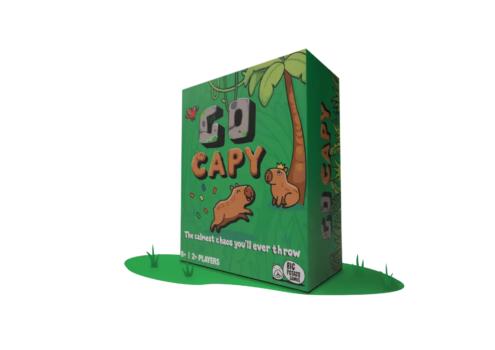
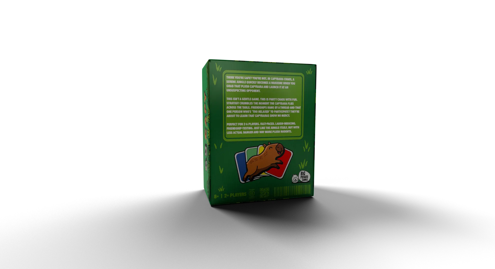
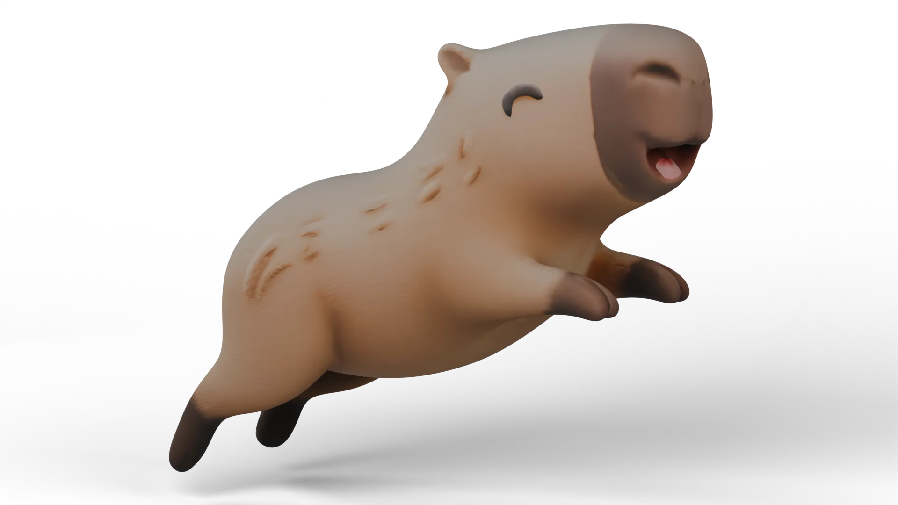
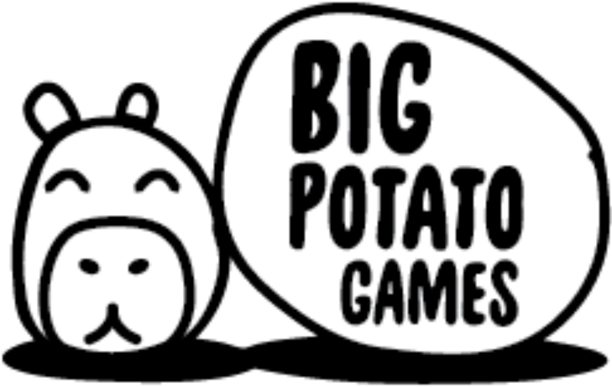
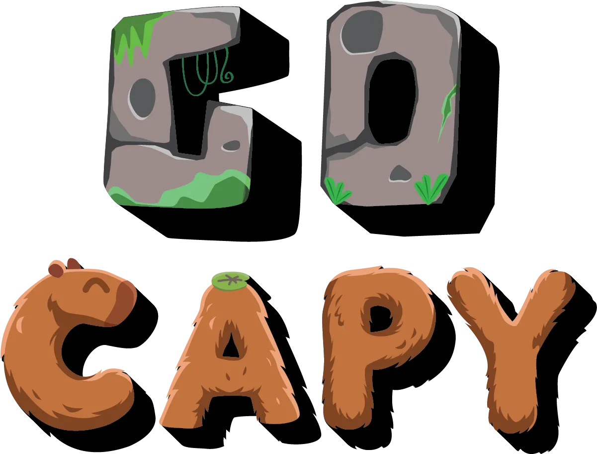

GO CAPY!
Go Capy is a fast-paced dexterity card game that sees players competing to hit zero cards whilst also watching out for the capybara plush that they need to catch or be faced with a penalty.
The brief: design a new party game for Big Potato Games that uses little or no language. It must take five minutes to learn and thirty minutes to play, and avoid typical board game themes such as trains and cowboys.



Big Potato Games is a London-based company that makes quick party games like Herd Mentality and The Chameleon. To keep things simple, they use a “two-minute rule” so anyone can learn how to play right away. Their games focus on getting people talking rather than testing them on random trivia.
They also design their boxes to look like billboards. Instead of busy, traditional board game art, they use clean designs, bright neon colours, and funny, simple characters to catch your eye.
To cut downtime between turns, whoever holds the plush capybara can throw it at another player at any moment. Drop it and you take a penalty that sabotages your hand. To balance this, a special card in the deck lets you win outright if you are holding the plush when it is played.


Early user testing found the original version of the game was too simple and there was too much downtime between turns. This feedback allowed me to develop the capybara plush which added a unique tactile element to the game.
For the branding, I looked at which animals were popular at the moment. Capybaras are everywhere in shops right now, and they suit the playful, bold look Big Potato Games is known for.